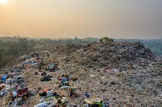
Polusi darat adalah kondisi dimana kualitas tanah menurun di suatu lokasi akibat masuknya bahan-bahan asing atau terkontaminasi polutan lainnya. Bila tanah terkontaminasi, tanah bisa saja menjadi bahaya karena merubah komposisi fisik, kimia dan biologis tanah berubah serta menimbulkan banyak dampak negatif terhadap kehidupan. Tanah akan kehilangan kesuburannya dan tidak lagi dapat digunakan secara optimal untuk menanam atau menumbuhkan tanaman ataupun menyimpan air, terutama karena beberapa jenis polutan sulit terurai secara alami dan dapat bertahan dalam waktu yang lama di dalam tanah.
Jenis Polutan dalam Tanah
Proses terjadinya Pencemaran
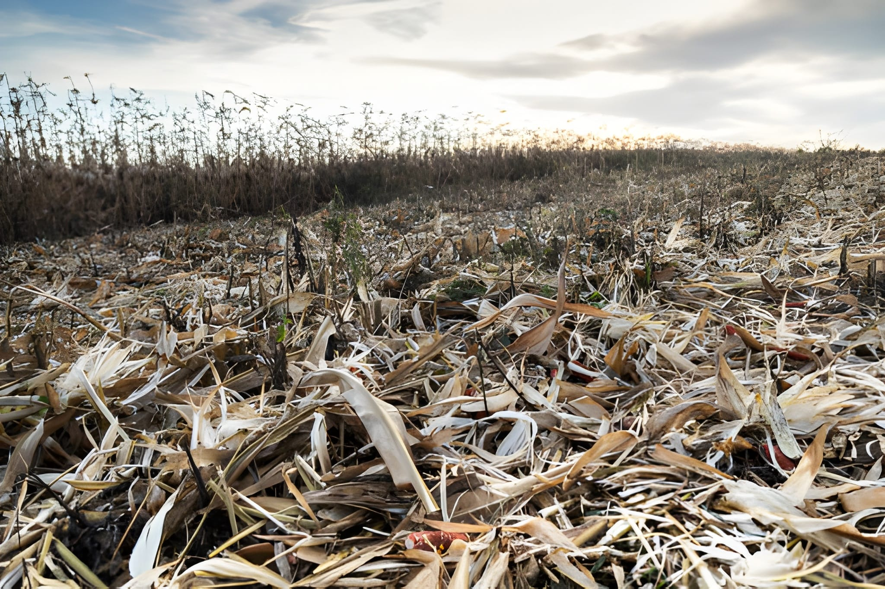
Limbah Pertanian
Penggunaan pestisida, pupuk kimia, dan obat pembasmi hama secara berlebihan dapat meresap ke dalam tanah dan mencemarinya. Bahan-bahan kimia tersebut bisa tertinggal lama di dalam tanah dan mengubah kondisi alaminya.
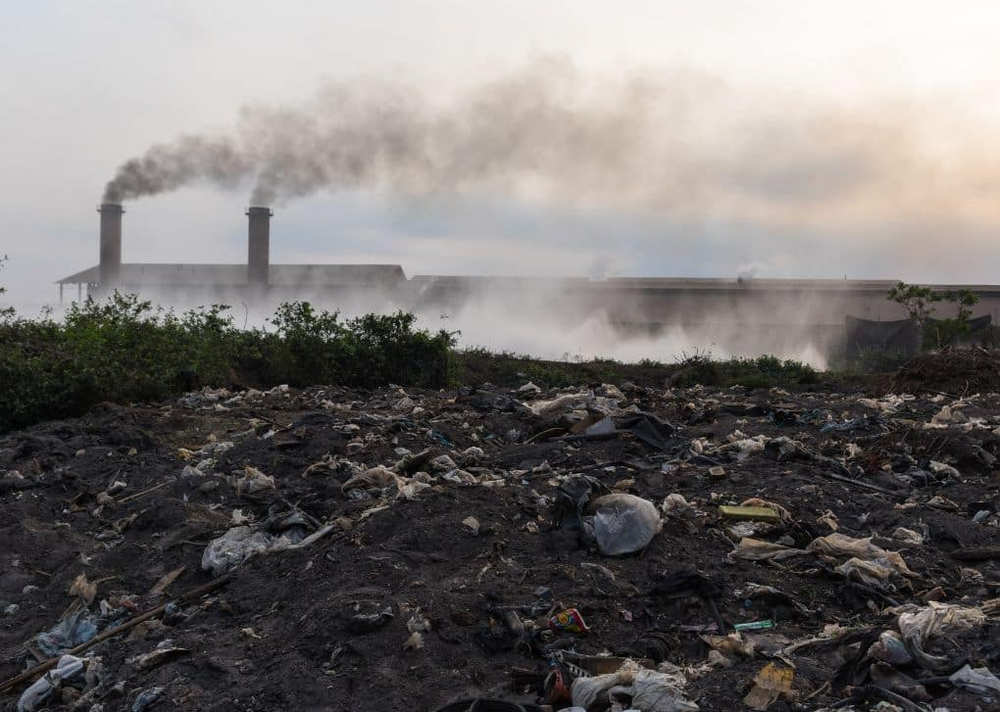
Limbah Industri
Pembuangan zat kimia, limbah cair, atau bahan berbahaya dari pabrik secara sembarangan dapat membuat tanah tercemar. Beberapa zat tersebut sulit terurai sehingga dapat bertahan lama di dalam tanah.
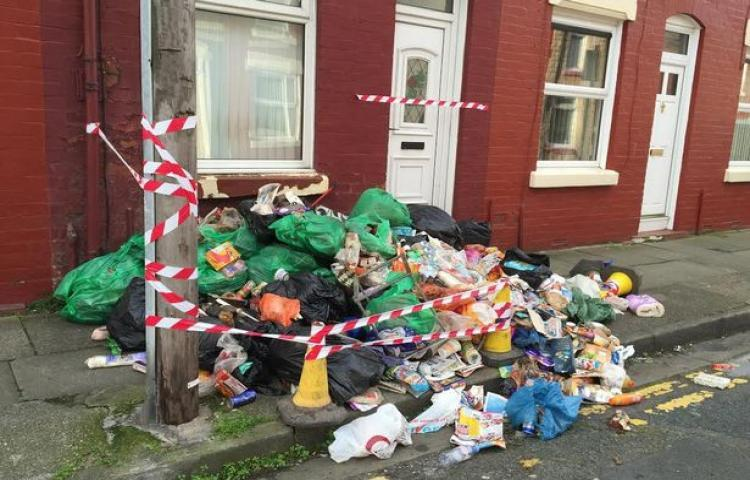
Limbah Rumah Tangga
Sampah seperti plastik, styrofoam, baterai bekas, serta sisa detergen dapat mencemari tanah jika dibuang sembarangan. Banyak dari bahan ini tidak mudah hancur secara alami, sehingga menumpuk dan merusak kualitas tanah.
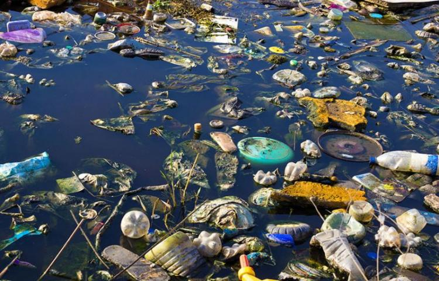
Polusi air adalah kondisi ketika bahan-bahan asing masuk ke dalam perairan seperti sungai, danau, laut, atau air tanah sehingga kualitas air menurun dan tidak layak digunakan. Pencemaran ini dapat terjadi akibat aktivitas manusia maupun proses alami yang membawa zat pencemar ke dalam air. Masalah polusi air telah menjadi isu global karena masih banyak wilayah di dunia yang kesulitan mendapatkan air bersih untuk kebutuhan sehari-hari.
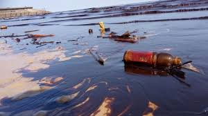
Tumpahan Minyak
Minyak yang tumpah ke laut atau perairan dapat menyebar di permukaan air dan mencemarinya. Minyak sulit bercampur dengan air sehingga dapat bertahan lama dan mengganggu kondisi alami perairan.
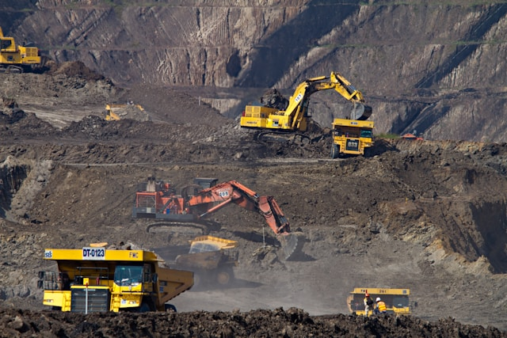
Pertambangan
Kegiatan pertambangan dapat menghasilkan limbah yang mengandung zat kimia atau partikel tertentu. Jika tidak dikelola dengan baik, limbah tersebut dapat terbawa aliran air hujan dan masuk ke sungai atau danau.
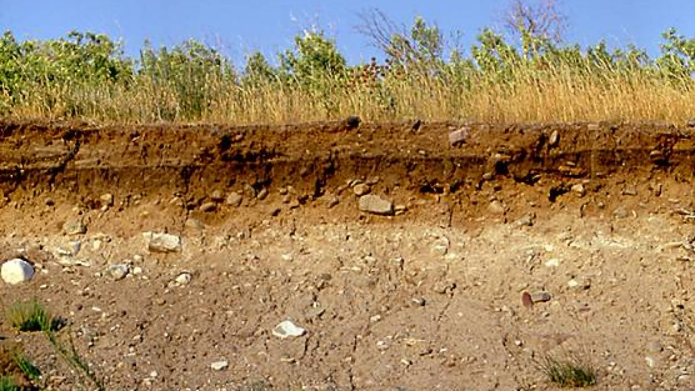
Endapan Tanah
Tanah yang terbawa oleh air hujan dari daerah gundul atau area konstruksi dapat masuk ke sungai dan membuat air menjadi keruh. Endapan ini dapat mengubah kondisi fisik air dan mengurangi kejernihannya.
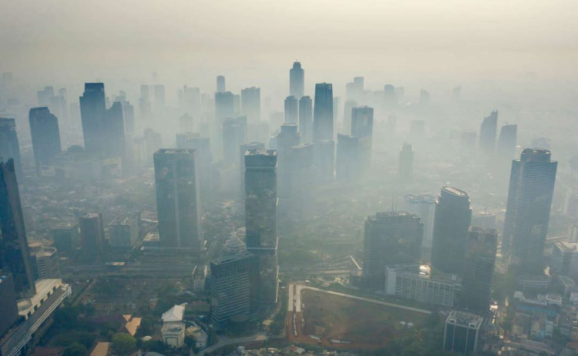
Polusi udara adalah kondisi ketika udara tercemar oleh gas berbahaya dan partikel kecil yang dilepaskan ke atmosfer akibat berbagai aktivitas manusia. Udara yang seharusnya bersih dan sehat dapat berubah komposisinya karena adanya zat pencemar tersebut. Pencemaran udara umumnya terjadi di daerah perkotaan dan kawasan industri, terutama di wilayah dengan aktivitas kendaraan dan produksi yang tinggi.
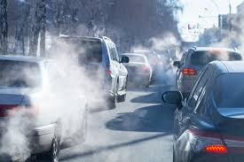
Emisi kendaraan
Asap yang dikeluarkan oleh mobil, motor, dan kendaraan lainnya mengandung gas seperti karbon monoksida dan partikel halus yang mencemari udara. Semakin banyak kendaraan, semakin besar pula jumlah emisi yang dihasilkan.
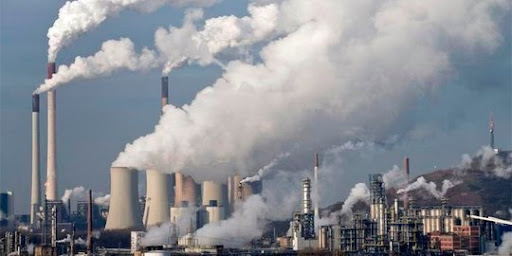
Limbah Asap Industri
Pabrik dan kegiatan industri sering menghasilkan asap yang mengandung zat kimia tertentu. Jika tidak disaring dengan baik, asap tersebut dapat menyebar dan menurunkan kualitas udara.
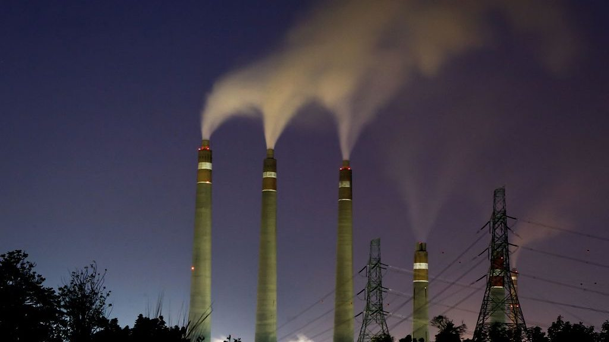
Pembangkit listrik
Beberapa pembangkit listrik, terutama yang menggunakan bahan bakar fosil seperti batu bara, menghasilkan asap dan gas buang yang dapat mencemari udara di sekitarnya.